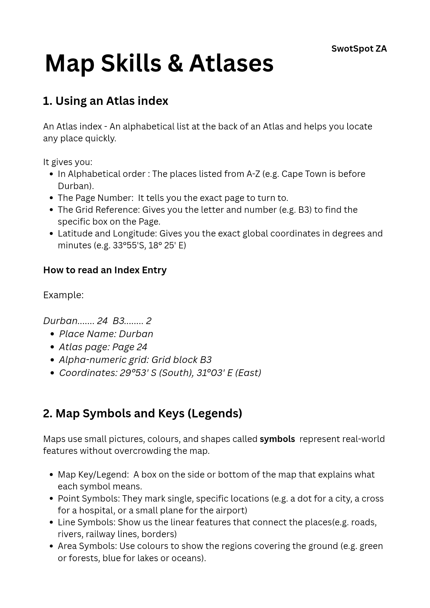
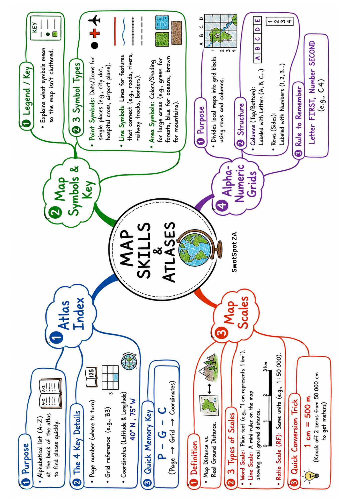
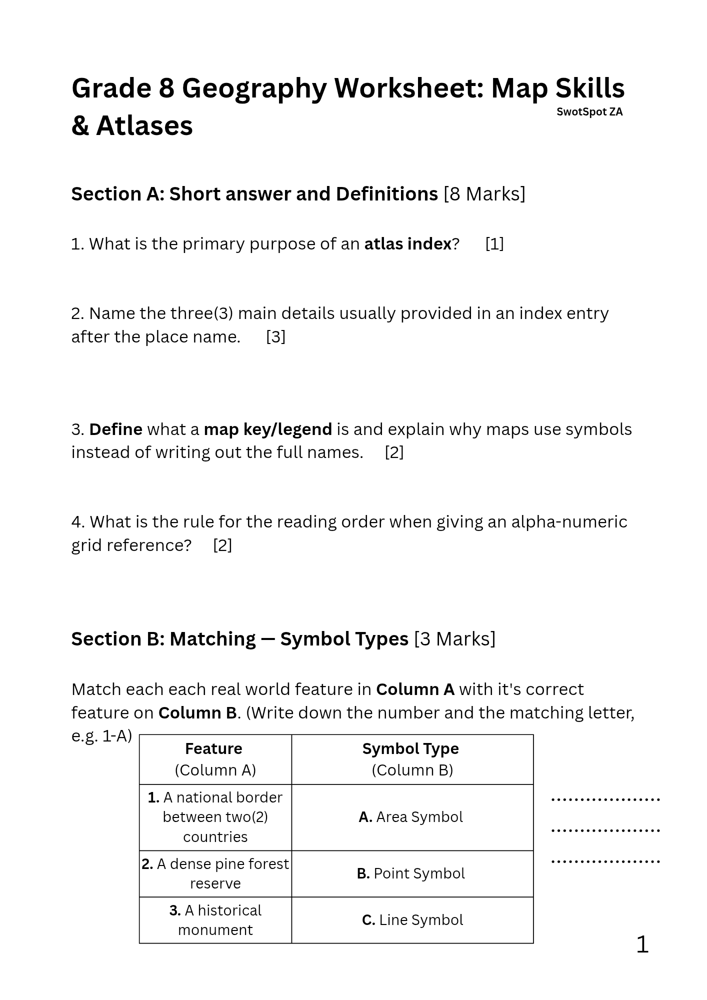

Home / Grade 8 / Geography / Map Skills and Atlases
Grade 8 Geography: Map Skills and Atlases
CAPSGrade 8Geography
What you will learn
An atlas is a book of maps, and good map skills let you find any place quickly and measure real distances. In this lesson you will learn four skills: using an atlas index, reading map symbols, working with map scales and finding places on a grid.
1. Using an atlas index
The index at the back of an atlas lists places in alphabetical order, so Cape Town comes before Durban. Each entry gives you the page number, a grid reference such as B3, and the exact latitude and longitude. For example, Durban is on page 24, in block B3, at 29°53′S 31°03′E. Latitude is always given first.
2. Map symbols and keys
Maps use symbols so they do not become crowded. The key (or legend) explains what each symbol means. Point symbols mark one place, like a dot for a city or a cross for a hospital. Line symbols show roads, rivers, railways and borders. Area symbols use colour or shading, like green for forests and blue for water.
3. Map scales
A scale links a distance on the map to the real distance on the ground. A word scale says it in words, such as "1 cm represents 1 km". A line scale is a ruler drawn on the map: mark the distance on a strip of paper and compare it with the line. A ratio scale, such as 1 : 50 000, means 1 cm on the map is 50 000 cm (500 m) on the ground.
4. Alpha-numeric grids
A grid divides a map into columns labelled with letters and rows labelled with numbers. To find a place, always read the letter first and then the number, for example C4.
Summary of the notes
- An atlas index is an A to Z list that tells you the page, grid block and coordinates of a place.
- Coordinates are written as latitude first, then longitude, in degrees and minutes.
- Map symbols save space, and the key explains them. They come in three kinds: point, line and area.
- A map scale can be a word statement, a line scale or a ratio, and all of them turn map distance into real distance.
- On a grid, read the letter first and then the number to find the right block.
Quick summary tricks
- Index entry: remember N-P-G-C: Name, Page, Grid, Coordinates.
- Coordinates: latitude comes before longitude, just like L-A comes before L-O in the alphabet.
- Symbols: a point is a dot, a line is a path, an area is a patch of colour.
- Ratio scale: to change centimetres to metres, drop two zeros. To change to kilometres, drop five zeros. So 50 000 cm is 500 m, or 0.5 km.
- Grid references: letter first, then number, as in "C4".
Key terms
- Atlas: a book of maps.
- Index: an alphabetical list of places at the back of an atlas.
- Grid reference: a letter and number, like B3, that names one block on a map page.
- Latitude and longitude: the lines that give the exact position of a place on Earth.
- Key (legend): the box that explains the symbols on a map.
- Scale: the link between distance on the map and distance on the ground.
Download the notes
Choose the digital version to read on a phone or computer, or the print version to print at home or school.

Mind map

Practice
Try each worksheet first, then check your answers with the memo. Pick the digital or print version of each.
Worksheet 1

Quick check
Test yourself, then tap each question to see the answer.
In the index entry "Durban 24 B3 29°53′S 31°03′E", what does B3 tell you?
It is the grid block on page 24 where Durban is found.
On a 1 : 50 000 map, how many metres does 1 cm stand for?
500 m, because 50 000 cm is 500 m.
Which kind of symbol would be used for a river?
A line symbol.
When reading a grid reference, do you read the letter or the number first?
The letter first, then the number.